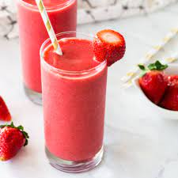

B and L's Strawberry Smoothie

Description
These pancakes are requested regularly by my family for breakfast. The recipe is easy to throw together and the taste is yummy!
Ingredients
- 8 strawberries, hulled
- 1/2 cup skim milk
- 1/2 cup plain yogurt
- 3 tablespoons white sugar
- 2 teaspoons vanilla extract
- 6 cubes ice, crushed
- 1 1/4 cups buttermilk
Step 1
- In a blender combine strawberries, milk, yogurt, sugar and vanilla. Toss in the ice. Blend until smooth and creamy. Pour into glasses and serve.